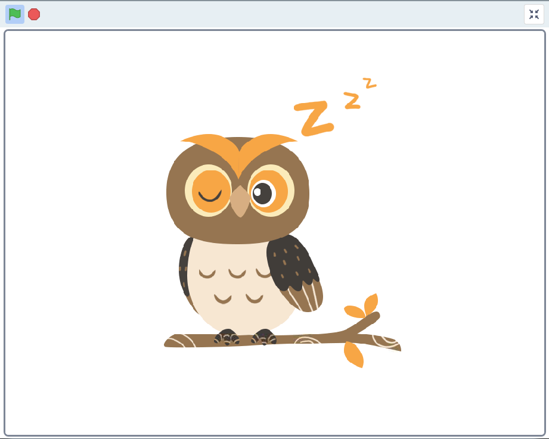
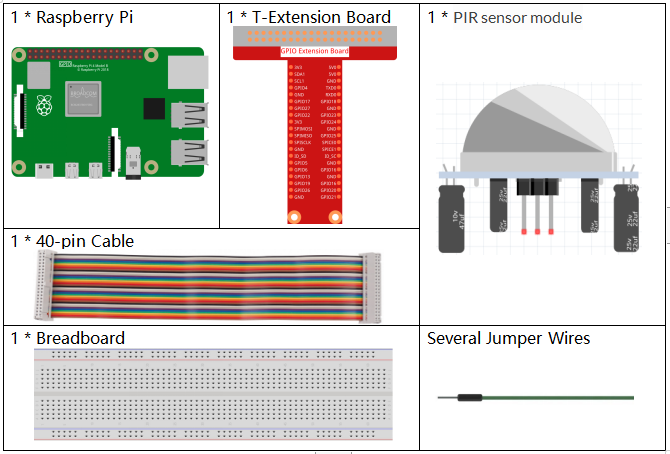
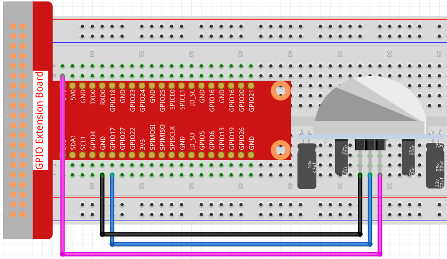
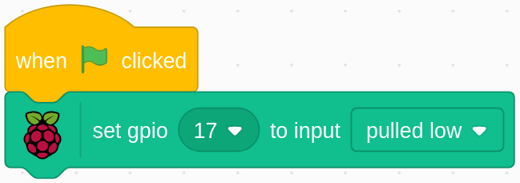
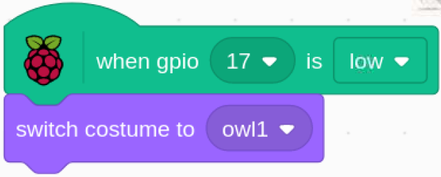
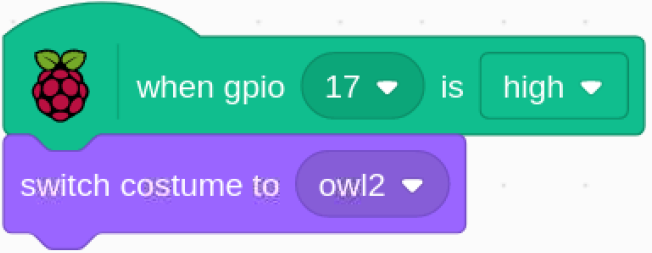

Note
Bonjour et bienvenue dans la communauté SunFounder Raspberry Pi & Arduino & ESP32 Enthusiasts sur Facebook ! Plongez plus profondément dans l’univers de Raspberry Pi, Arduino et ESP32 avec d’autres passionnés.
Pourquoi nous rejoindre ?
Support d’experts : Résolvez vos problèmes après-vente et vos défis techniques avec l’aide de notre communauté et de notre équipe.
Apprenez et partagez : Échangez des astuces et des tutoriels pour améliorer vos compétences.
Aperçus exclusifs : Bénéficiez d’un accès anticipé aux annonces de nouveaux produits et à des avant-premières.
Réductions exclusives : Profitez de réductions sur nos derniers produits.
Promotions festives et cadeaux : Participez à des promotions et à des cadeaux lors des fêtes.
👉 Prêt à explorer et à créer avec nous ? Cliquez sur [Ici] et rejoignez-nous dès aujourd’hui !
1.5 Réveiller le hibou
Aujourd’hui, nous allons jouer à un jeu pour réveiller le hibou.
Lorsque quelqu’un s’approche du module capteur PIR, le hibou se réveillera de son sommeil.
Le module PIR comporte deux potentiomètres : l’un sert à ajuster la sensibilité et l’autre à régler la distance de détection. Pour que le module PIR fonctionne de manière optimale, vous devez tourner les deux boutons à fond dans le sens antihoraire.
Composants nécessaires
Construire le circuit
Charger le code et voir ce qui se passe
Chargez le fichier de code (1.5_wake_up_the_owl.sb3) dans Scratch 3.
Lorsque vous vous approchez du module capteur PIR, vous verrez le hibou dans la zone de scène déployer ses ailes et se réveiller. Lorsque vous vous éloignez, le hibou retournera à son état de sommeil.
Conseils sur le sprite
Sélectionnez Sprite1 et cliquez sur Costumes en haut à gauche ; téléversez owl1.png et owl2.png depuis le chemin davinci-kit-for-raspberry-pi/scratch/picture via le bouton Téléverser un costume ; supprimez les 2 costumes par défaut et renommez le sprite en hibou.
Conseils sur le code
Lorsque le drapeau vert est cliqué, l’état initial de gpio17 est défini sur bas.
{kind=link}
Lorsque gpio17 est bas (personne ne s’approche), changez le costume du sprite hibou en owl1 (état de sommeil).
{kind=link}
Lorsque gpio17 est haut (quelqu’un s’approche), changez le costume du sprite hibou en owl2 (état éveillé).